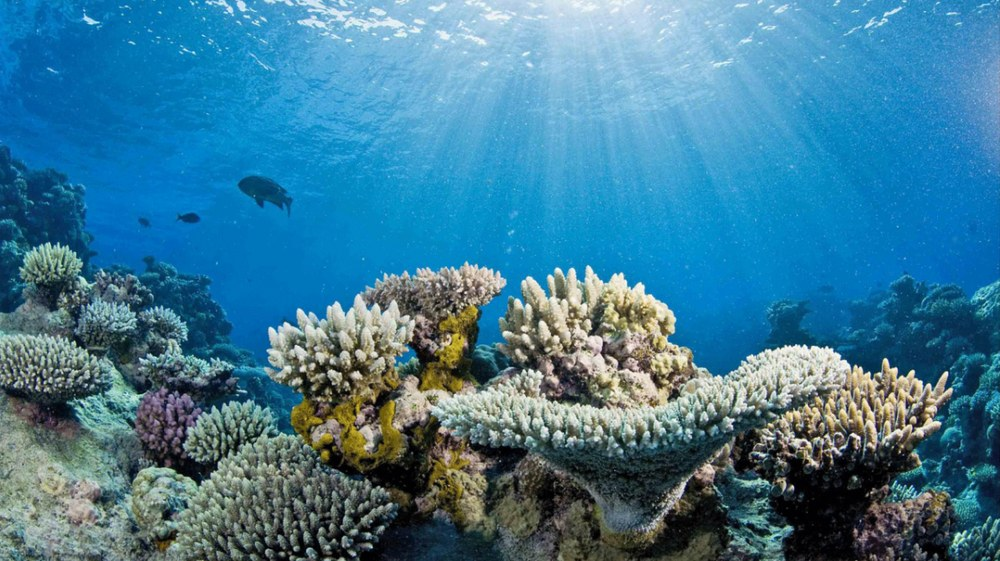

산호 백화현상 (Coral Bleaching)

쉽게 풀면
산호의 색깔은 상당 부분 산호 자신의 색이 아니라, 산호 조직 안에 함께 살고 있는 아주 작은 조류(주산텔라)의 색이다. 이 조류는 광합성으로 만든 영양분을 산호에게 나눠주고, 산호는 그 대가로 조류에게 안전한 집을 제공하는 공생 관계를 맺고 있다.
그런데 바닷물 온도가 평소보다 조금만 높아져도 산호는 스트레스를 받아 이 조류를 몸 밖으로 내보내거나 조류가 죽어버리는데, 그러면 산호의 하얀 골격이 그대로 비쳐 보이게 된다. 이것이 바로 "백화(bleaching, 표백)"라 불리는 이유이다.
색을 잃은 산호가 곧바로 죽는 것은 아니지만, 주요 영양 공급원을 잃은 채 오래 버티지 못하면 결국 죽게 된다.
왜 중요한가
산호초는 해양 생물종의 상당수가 서식처로 삼는 생태계 핵심 기반이자, 어업과 관광을 통해 연안 지역 주민의 생계와도 연결되어 있다.
그래서 백화현상은 단순히 산호 개체의 생리적 스트레스 반응을 넘어, 기후변화가 해양 생태계 전체와 인간 사회에 미치는 영향을 보여주는 대표적인 지표로 기후과학·해양생태학·환경정책 연구 전반에서 폭넓게 다뤄진다. 백화 발생 빈도와 규모의 변화를 추적하는 것은 지구온난화 진행 상황을 가늠하는 생물학적 신호로도 활용된다.
핵심 정리
- 산호 조직 안에는 단세포 조류(주산텔라, 현재 분류로는 Symbiodiniaceae 과)가 살며 광합성 산물을 산호에게 준다. 산호 에너지의 상당 부분이 여기서 오는 것으로 알려져 있다.
- 백화는 스트레스로 이 공생이 깨져 산호 조직 속 조류가 줄거나 색소를 잃어 흰 골격이 비쳐 보이는 상태이다. 고수온과 강한 빛의 조합이 대표적인 원인이며 염분 변화, 오염 등도 있다(Weis, 2008).
- 대규모 백화는 평년 최고 수온보다 1 °C 이상 높은 수온이 몇 주 지속될 때 나타난다는 경험칙이 있다(Hoegh-Guldberg, 1999).
- 회복 vs 폐사: 백화가 곧 죽음은 아니다. 스트레스가 비교적 빨리 사라지면 조류를 다시 받아들여 회복하지만, 오래 계속되면 굶어 죽는다. 반복되는 대규모 백화가 산호초 군집을 바꾼다는 보고가 있다(Hughes 등, 2017; 2018).
공생조류는 산호 에너지의 최대 90%를 광합성으로 공급하므로, 물이 너무 따뜻해져 조류가 떠나면 산호는 굶기 시작한다. 약한 스트레스에서는 하얗게 되는 대신 파랑·분홍·보라·노랑으로 화려하게 보이는 경우도 있다. 미국 해양대기청(NOAA)은 해수면 온도가 해당 지역의 가장 더운 달의 평균 수온(MMM)보다 높은 정도를 ‘핫스팟’으로 표시하고, 1 ℃ 이상인 주를 열 스트레스 누적에 센다. 전 지구적 백화는 1998년에 처음 인정되었고(산호초의 21%가 백화 수준의 열 스트레스), 2014~2017년 사건은 산호초의 70% 이상에 영향을 주었으며, 2016년 대보초 백화로 산호의 29~50%가 죽었고, 2023~2025년의 네 번째 사건은 NOAA가 2024년 4월에 확인했다.
예시로 보기
열축적지수(DHW) 계산(가상의 예): 미국 NOAA 산호초감시(Coral Reef Watch)는 해당 지역의 가장 더운 달의 평균 수온(MMM)보다 높은 정도(HotSpot)가 1 °C 이상인 주만 골라 최근 12주 동안 합산해 DHW(단위 °C-주)로 표시한다. 12주 동안 주별 HotSpot이 0.4, 0.8, 1.2, 1.5, 1.9, 2.2, 2.0, 1.7, 1.3, 1.0, 0.7, 0.3 °C였다면 1 °C 이상인 값만 더해 1.2 + 1.5 + 1.9 + 2.2 + 2.0 + 1.7 + 1.3 + 1.0 = 12.8 °C-주이다. NOAA는 DHW가 4 °C-주 이상이면 백화가 유의하게 나타날 가능성이 크고, 8 °C-주 이상이면 광범위한 백화와 상당한 폐사가 예상된다고 안내한다(Liu 등, 2014).
야외 연구 예: 산호 군집의 백화 비율(군집 중 흰 면적 또는 백화된 군체 비율), 회복 후 생존율, 조류 밀도와 엽록소 함량, 수온 기록을 함께 제시한다.
자주 하는 오해
| 오해 | 바로잡기 |
|---|---|
| 백화된 산호는 이미 죽은 산호이다. | 살아 있으나 조류를 잃은 상태이며 회복될 수 있다. 죽은 산호는 조류(갈색 잔류물)가 얹히고 색이 변한다. |
| 산호 색은 산호 자신의 색이다. | 조직 안 조류가 주는 색이 큰 몫이고, 산호 자신의 형광 단백질 색도 있다. |
| 모든 산호가 같은 온도에서 백화된다. | 종, 군집이 받은 온도 이력, 가진 공생 조류 종류에 따라 내성이 다르다. |
| 해양산성화와 백화는 같은 현상이다. | 백화는 주로 열 스트레스에 의한 공생 붕괴이고, 해양산성화는 석회화 감소를 통해 작용한다. 둘이 겹치면 영향이 커질 수 있으나 기전은 다르다. |
| 백화는 기후 변화 때문에만 일어난다. | 고수온이 주된 원인으로 지목되지만 오염, 질병, 낮은 수온 등으로도 일어난다. |
논문에서는 이렇게 쓰입니다
예시 문장
아래 예문은 용어의 쓰임을 보이려고 만든 것으로, 실제 논문 문장이 아니다.
이 문장은 "바닷물이 평소보다 뜨거워진 지역일수록 산호가 공생 조류를 잃고 하얗게 변하는 사례가 더 많이 관찰되었다"는 뜻이다.
산호 생리생태학 연구에서, 산호가 반복된 백화 경험을 통해 열에 더 강한 공생 조류로 조성을 바꾸며 적응해가는 과정을 설명하는 문장이다.
원격탐사·기후모델링 연구에서, 위성 관측 자료로 산출한 열 스트레스 지표가 실제 현장의 백화 발생과 잘 맞아떨어졌음을 보고하는 문장이다.
조금 더 깊게 보면
백화 위험을 정량적으로 예측할 때는 흔히 '열축적지수(degree heating weeks, DHW)'라는 지표를 사용하는데, 이는 평년 수온을 일정 수준 이상 초과한 정도를 일정 기간 누적한 값으로, 이 값이 높을수록 대규모 백화가 발생할 가능성이 커진다. 또한 산호에 공생하는 주산텔라도 단일 종이 아니라 여러 유형(clade)으로 나뉘며, 유형에 따라 열에 대한 내성이 다르기 때문에 어떤 공생 조류 조합을 가진 산호인지가 백화 취약성과 회복력을 좌우하는 중요한 요인으로 다뤄진다.
주의할 점
백화현상이 나타났다고 해서 산호가 곧바로 죽는 것은 아니다. 스트레스 원인(고수온 등)이 비교적 빨리 사라지면 산호는 다시 공생 조류를 받아들여 회복할 수 있다. 다만 해양산성화나 반복적인 고수온이 겹치면 회복할 틈 없이 폐사에 이르는 경우가 많아, 두 현상을 함께 고려해 논문을 읽어야 한다.
헷갈리기 쉬운 용어
| 용어 | 한 줄 설명 |
|---|---|
| 산호 백화 | 공생 조류를 잃어 하얗게 되는 현상 |
| 해양산성화 | 바다 pH 저하로 석회화가 어려워지는 현상(백화와 별개) |
| 주산텔라 공생 | 백화의 대상이 되는 산호-조류 공생 관계 |
| 공생 유형 | 상리공생·편리공생·기생 등 공생 분류. 백화는 상리공생의 붕괴 |
참고 문헌
- Hoegh-Guldberg, O. (1999). Climate change, coral bleaching and the future of the world's coral reefs. Marine and Freshwater Research, 50, 839–866.
- Weis, V. M. (2008). Cellular mechanisms of Cnidarian bleaching: stress causes the collapse of symbiosis. Journal of Experimental Biology, 211, 3059–3066.
- Hughes, T. P., et al. (2017). Global warming and recurrent mass bleaching of corals. Nature, 543, 373–377.
- Hughes, T. P., et al. (2018). Spatial and temporal patterns of mass bleaching of corals in the Anthropocene. Science, 359, 80–83.
- Liu, G., et al. (2014). Reef-scale thermal stress monitoring of coral ecosystems: new 5-km global products from NOAA Coral Reef Watch. Remote Sensing, 6, 11579–11606.
- Wikipedia contributors. (n.d.). Coral bleaching. In Wikipedia, The Free Encyclopedia.